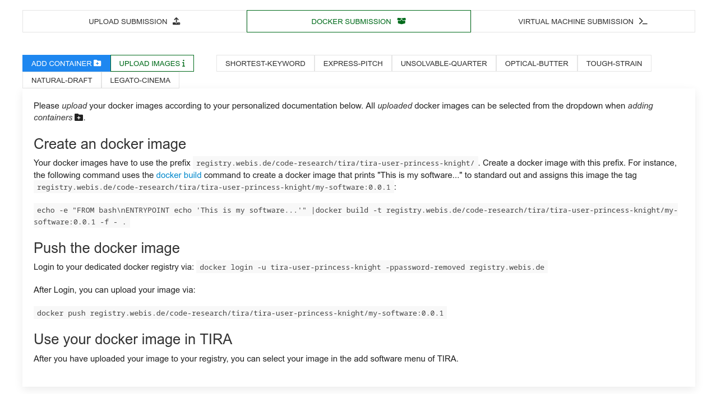
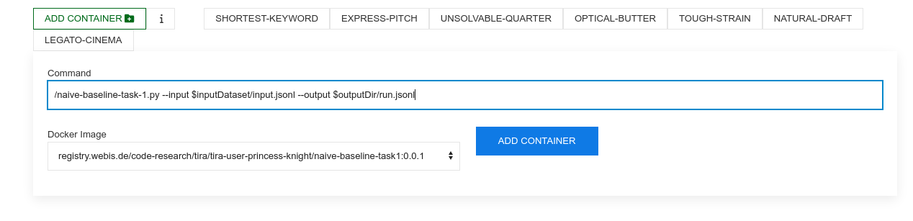
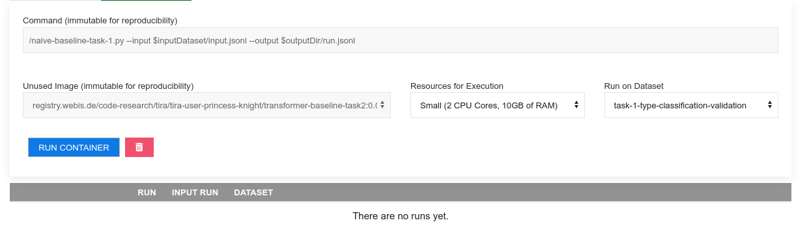
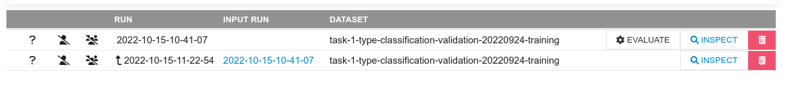

Clickbait Challenge at SemEval 2023 - Clickbait Spoiling
Synopsis
Clickbait posts link to web pages and advertise their content by arousing curiosity instead of providing informative summaries. Clickbait spoiling aims at generating short texts that satisfy the curiosity induced by a clickbait post. We invite you to participate in the Clickbait Challenge 2023 featuring two subtasks.
- Communication: [ Mailing list, Organizers] [Twitter]
Task
The following figure illustrates some example inputs and the expected output for clickbait spoiling:

- Task 1 on Spoiler Type Classification: The input is the clickbait post and the linked document. The task is to classify the spoiler type that the clickbait post warrants (either "phrase", "passage", "multi"). For each input, an output like
{"uuid": "<UUID>", "spoilerType": "<SPOILER-TYPE>"}has to be generated where<SPOILER-TYPE>is eitherphrase,passage, ormulti. - Task 2 on Spoiler Generation: The input is the clickbait post and the linked document (and, optional, the spoiler type if your approach uses this field). The task is to generate the spoiler for the clickbait post. For each input, an output like
{"uuid": "<UUID>", "spoiler": "<SPOILER>"}has to be generated where<SPOILER>is the spoiler for the clickbait post.
Important Dates
- October 1, 2022: Submission System Opens
- December 1, 2022: Early bird software submission phase (optional)
- January 24, 2023: Submission deadline (extended, was initially January 10).
- February 28, 2023: Participant paper submission
- March 2023: Peer review notification
- April 2023: Camera-ready participant papers submission
- Summer 2023: SemEval workshop (co-located with a major NLP conference)
The timezone of all deadlines is Anywhere on Earth.
Data [download]
The dataset contains the clickbait posts and manually cleaned versions of the linked documents, and extracted spoilers for each clickbait post (the dataset was constructed and published in the corresponding paper). Additionally, the spoilers are categorized into three types: short phrase spoilers, longer passage spoilers, and multiple non-consecutive pieces of text.
The training and validation data is available for download on zenodo. This dataset contains contains 3,200 posts for training (the file training.jsonl) and 800 posts for validation (the file validation.jsonl). After training and validation, systems are evaluated on 1,000 test posts.
Input Format
The data comes in JSON Lines format (.jsonl) where each line contains a clickbait post and the manually cleaned version of the linked document. For each line, the goal is to classify the spoiler type needed (task 1), and/or to generate the spoiler (task 2).
For each entry in the training and validation dataset, the following fields are available:
uuid: The uuid of the dataset entry.postText: The text of the clickbait post which is to be spoiled.targetParagraphs: The main content of the linked web page to classify the spoiler type (task 1) and to generate the spoiler (task 2). Consists of the paragraphs of manually extracted main content.targetTitle: The title of the linked web page to classify the spoiler type (task 1) and to generate the spoiler (task 2).targetUrl: The URL of the linked web page.humanSpoiler: The human generated spoiler (abstractive) for the clickbait post from the linked web page. This field is only available in the training and validation dataset (not during test).spoiler: The human extracted spoiler for the clickbait post from the linked web page. This field is only available in the training and validation dataset (not during test).spoilerPositions: The position of the human extracted spoiler for the clickbait post from the linked web page. This field is only available in the training and validation dataset (not during test).tags: The spoiler type (might be "phrase", "passage", or "multi") that is to be classified in task 1 (spoiler type classification). For task 1, this field is only available in the training and validation dataset (not during test). For task 2, this field is always available and can be used.- Some fields contain additional metainformation about the entry but are unused:
postId,postPlatform,targetDescription,targetKeywords,targetMedia.
The following is a simplified entry in the dataset (line breaks added for readability):
{
"uuid": "0af11f6b-c889-4520-9372-66ba25cb7657",
"postText": ["Wes Welker Wanted Dinner With Tom Brady, But Patriots QB Had Better Idea"],
"targetParagraphs": [
"It’ll be just like old times this weekend for Tom Brady and Wes Welker.",
"Welker revealed Friday morning on a Miami radio station that he contacted Brady because he’ll be in town for Sunday’s game between the New England Patriots and Miami Dolphins at Gillette Stadium. It seemed like a perfect opportunity for the two to catch up.",
"But Brady’s definition of \"catching up\" involves far more than just a meal. In fact, it involves some literal \"catching\" as the Patriots quarterback looks to stay sharp during his four-game Deflategate suspension.",
"\"I hit him up to do dinner Saturday night. He’s like, ‘I’m going to be flying in from Ann Arbor later (after the Michigan-Colorado football game), but how about that morning we go throw?’ \" Welker said on WQAM, per The Boston Globe. \"And I’m just sitting there, I’m like, ‘I was just thinking about dinner, but yeah, sure. I’ll get over there early and we can throw a little bit.’ \"",
"Welker was one of Brady’s favorite targets for six seasons from 2007 to 2012. It’s understandable him and Brady want to meet with both being in the same area. But Brady typically is all business during football season. Welker probably should have known what he was getting into when reaching out to his buddy.",
"\"That’s the only thing we really have planned,\" Welker said of his upcoming workout with Brady. \"It’s just funny. I’m sitting there trying to have dinner. ‘Hey, get your ass up here and let’s go throw.’ I’m like, ‘Aw jeez, man.’ He’s going to have me running like 2-minute drills in his backyard or something.\"",
"Maybe Brady will put a good word in for Welker down in Foxboro if the former Patriots wide receiver impresses him enough."
],
"targetTitle": "Wes Welker Wanted Dinner With Tom Brady, But Patriots QB Had A Better Idea",
"targetUrl": "http://nesn.com/2016/09/wes-welker-wanted-dinner-with-tom-brady-but-patriots-qb-had-better-idea/",
"spoiler": ["how about that morning we go throw?"],
"spoilerPositions": [[[3, 151], [3, 186]]],
"tags": ["passage"]
}
Output Format [validator]
The output format for task 1 and task 2 is identical but other fields are mandatory. Please submit your results in JSON Lines format producing one output line for each input instance.
Each line should have the following format:
{"uuid": "<UUID>", "spoilerType": "<SPOILER-TYPE>", "spoiler": "<SPOILER>"}
where:
<UUID>is the uuid of the input instance.<SPOILER-TYPE>is the spoiler type (might be "phrase", "passage", or "multi") to be predicted in task 1. This field is mandatory for task 1 but optional for task 2 (to indicate that your system used some type of spoiler type classification during the spoiler generation).<SPOILER>is the generated spoiler to be produced in task 2. This field is mandatory for task 2.
Baselines [Github, Dockerhub]
We provide some naive and some fine-tuned baselines that are available at the corresponding git repository. All baselines are available on Dockerhub to simplify participation.
Evaluation [code]
The description of the evaluation will be announced soon.
Submission
We will accept run file submissions and software submissions via TIRA. Run file submissions will be uploaded to TIRA in the format specified above. For software submissions, you upload docker images to TIRA that will be executed on the test data within the TIRA platform (using a single file as input to produce a single file as output in the format specified above). We recommend software submissions to improve the reproducibility and reusability. Please run your software on the datasets "task-1-type-classification" (for task 1) respectively "task-2-spoiler-generation" (for task 2) in TIRA to produce submissions (you can use the datasets "task-1-type-classification-validation" respectively "task-2-spoiler-generation-validation" to validate your approaches).
TIRA Quickstart
Participants may upload docker images that are executed within TIRA so that the runs can be reproduced or the software may be applied to different data (of same format) in the future. You can find the access credentials for your dedicated container registry to upload your images under "Docker Submission":

Please follow the instructions there to upload your image.
For instance, you can upload the naive baseline for task 1 by first tagging the image accordingly, i.e., docker tag webis/pan-clickbait-spoiling-baselines:task1-naive-0.0.1 registry.webis.de/code-research/tira/YOUR-USER-NAME/YOUR-SOFTWARE-NAME:0.0.1, then logging in to your dedicated registry, i.e., docker login -u YOUR-USER-NAME -pTOKEN-PROVIDED-BY-TIRA registry.webis.de and finally uploading the image by running docker push registry.webis.de/code-research/tira/YOUR-USER-NAME/YOUR-SOFTWARE-NAME:0.0.1.
Your software is expected to accept two arguments:
- An input directory (named
$inputDatasetin TIRA). This input directory contains a input.jsonl file that contains the input data. - An output directory (named
$outputDirin TIRA). Your software should create its output in$outputDir/run.jsonl.
After you have uploaded your image, you can add new softwares that use this image.
Each combination of a command and a docker image is a software in TIRA (that can not be changed in retrospect to ensure reproducibility). Add a software by selecting your image and specifying the command that should be executed inside the image (should use the two arguments, for instance, the command for the naive baseline uploaded above is /naive-baseline-task-1.py --input $inputDataset/input.jsonl --output $outputDir/run.jsonl):

After adding the docker software, a new tab for this software appears. You can run your software by specifying the compute resources (that your software has available during its execution) and the dataset (the input to the software). Please run your software on the datasets "task-1-type-classification" (for task 1) respectively "task-2-spoiler-generation" (for task 2) in TIRA to produce submissions (you can use the datasets "task-1-type-classification-validation" respectively "task-2-spoiler-generation-validation" to validate your approaches). You can run your software multiple times in parallel so executing your software on different resource specifications enables evaluations on the scalability of the software: 
Once the run of your software completes, you can see the run and its evaluation: 
Related Work / Resources / Invited Talks
- Additional Resources and related work is available in the forum
- We have a call for participation that also contains an overview of such resources. The slides are available online. We held this presentation at the TU Dresden (18.10.2022, recording is available), TH Köln (21.10.2022), Uni Regensburg (26.10.2022), and Uni Leipzig (07.11.2022).